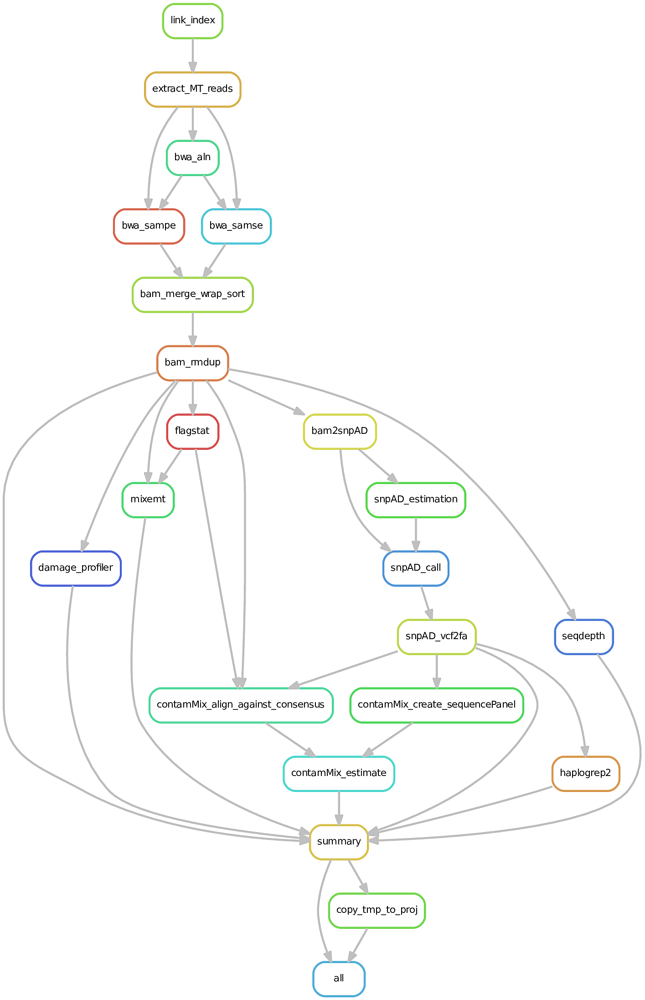

Workflow management systems
Alexander Hübner
30 January 2020
Computational analysis: a chain of commands
- most common computational analyses are complex: >> 1 step
- if only one or a few steps: quick and dirty
- more steps or more samples: automation wanted
Example: Calculate the average coverage at chromosome 21 of the human reference genome
Set-up
3 BAM files with sequencing data aligned against the human reference genome (e.g. output of EAGER)
samples taken from Meyer M et al. (Science, 2012): A high coverage genome sequence from an archaic Denisovan individual.
- HGDP00521: B_French
- HGDP00778: B_Han
- HGDP01029: B_San
heavily sub-sampled: in folder “data”
Goal
- average coverage at chromosome 21 for all of the samples
Necessary steps per sample:
- Sort sample by coordinate
- Index sample
- Subset sample to chromosome 21
- Determine coverage along chromosome 21
- Calculate average coverage on chromosome 21
Code for a single sample
# 1. Use samtools sort to sort reads by co-ordinate;
# requirement for indexing
samtools sort -o <sample>.sorted.bam <sample>.bam
# 2. Use samtools index to generate index for random read extraction
samtools index <sample>.sorted.bam
# 3. Extract all reads that were aligned to chromosome 21
samtools view -bh <sample>.sorted.bam 21 > <sample>.21.bam
# 4. Calculate the coverage along chromosome 21
samtools depth -a <sample>.21.bam > <sample>.21_depth.txt
# 5. Calculate the average coverage
awk '{sum += $3}END{print sum / NR}' <sample>.21_depth.txt \
> <sample>.21_meancov.txtHow do we deal with multiple samples?
Worst: copy and paste
bad practice
use only for
- small number of samples (rule of thumb: <= 3)
- will do only a single time
problems:
- modifying code requires a lot of changes
- code block get redundant => hard to read and debug
Better: for-loops
list samples for which a particular code block should be executed
improvements:
- code modifications only have to be a single time
- no code redundancy: only two additional lines
Better: for-loops
- code example for for-loop:
for SAMPLE in sample1 sample2 sample3; do
# 1. Use samtools sort to sort reads by co-ordinate;
# requirement for indexing
samtools sort -o ${SAMPLE}.sorted.bam ${SAMPLE}.bam
# 2. Use samtools index to generate index for random read extraction
samtools index ${SAMPLE}.sorted.bam
# 3. Extract all reads that were aligned to chromosome 21
samtools view -bh ${SAMPLE}.sorted.bam 21 > ${SAMPLE}.21.bam
# 4. Calculate the coverage along chromosome 21
samtools depth -a ${SAMPLE}.21.bam > ${SAMPLE}.21_depth.txt
# 5. Calculate the average coverage
awk '{sum += $3}END{print sum / NR}' ${SAMPLE}.21_depth.txt \
> ${SAMPLE}.21_meancov.txt
doneProblems: for-loops
not aware of missing data
- successful samples have to be explicitly exclude to avoid re-processing
- makes it harder to understand with which commands samples were processed
Problems: for-loops
serial processing on local computer
- sample2 will only be processed after sample1 was succesfully processed
- when samples and steps are independent from each other, parallisation has to be done manually
Real-life worst-case scenario
We have 100 samples, of which only 15 successfully finished our for-loop:
- 60 samples have broken BAM files and we need to run additional steps to fix the input format prior to running our for-loop
- 25 samles worked, however, they were low-coverage and we forgot to add the option ‘-a’ to the command samtools depth so that our average coverage estimate is wrong
- 15 samples worked and were high coverage: correct estimates
Solutions:
- 60 failed samples: start from the beginning after fixing the input files
- 25 samples with wrong average coverage estimate: re-start from samtools depth command
- 15 samples that worked: exclude from input sample list to avoid re-processing
instead of 1 for-loop, now 2 for-loops!
Workflow management systems
Workflows or pipelines
- computational analyses can be defined as a workflow with hierarchical steps

- next to the steps, workflows describe the dependencies from the steps to each other
The predecessor: make and the Makefile
- originally build to maintain the building and compilation process of complex computational software
- syntax is build on defining which input is required and which output is expected
- execution:
make -f Makefile
How does it work?
based on files
recursive checking whether required files for the current task are present; if not, go and check the task that produces the input file of the current task
only run task for a sample when
- the input file is missing or
- a file that is an input file to one of the rules that leads to the current task is newer than the output file of the current task
- the code definition of the current task changed
Example Makefile for “sorting by coordinate” command
Successors of make
originally written in the 70s; still used today in software development
concept independent of software development: can be used for any kind of commands
however,
- scripting language is rather rudimentary
- lacks common features for data processing, e.g. logging of meta-data
- not easily scalable to the usage on the cluster
- does not integrate well with conda
adaptation for use in data-driven sciences: e.g. Nextflow, Snakemake.
Nextflow vs. Snakemake
- different concepts regarding how to connect tasks and the underlying language
Nextflow
- tasks connection: channels (push)
- language: Groovy
Snakemake
- tasks connection: filename, similar like make (pull)
- language: Python
Snakemake
available since 2012:
Johannes Köster, Sven Rahmann, Snakemake—a scalable bioinformatics workflow engine, Bioinformatics, Volume 28, Issue 19, 1 October 2012, Pages 2520–2522, https://doi.org/10.1093/bioinformatics/bts480
abstract:
“Snakemake is a workflow engine that provides a readable Python-based workflow definition language and a powerful execution environment that scales from single-core workstations to compute clusters without modifying the workflow. It is the first system to support the use of automatically inferred multiple named wildcards (or variables) in input and output filenames.”
Execution
- execution scheme very similar to
make
- long list of powerful command-line options; try
snakemake -h - detailed overview over options: readthedocs Snakemake
Rules
- reminder: rule definition in
make
- in
snakemake:
Attention: indentation is important - either Tabs or a regular number of spaces (e.g. 4 or 8)
Implementing the first rule
Special case: rule without input requirements
recursive iteration through workflow: which output file depends on which input file?
by implementation: file listed in input has to be the output file of a different rule
non-cyclic workflows: one rule cannot have a file stated as input
solution: if file was generated outside of workflow, state as a rule parameter (params)
Special case: rule without input requirements
rule sort_coord:
output:
"{sample}.sorted.bam"
params:
bam = "{sample}.hg19.bam"
shell:
"""
samtools sort -o {output} {params.bam}
"""- files listed as parameters will not be checked regarding the directionality
Implementing the second rule
rule index_sorted_bam:
input:
"{sample}.sorted.bam"
output:
"{sample}.sorted.bam.bai"
shell:
"""
samtools index {input}
"""for all but the first rules, the directionality of the workflow is established by stating the output of one rule as the input of the subsequent rule
Providing the list of samples in for-loops
either explicitly stated:
or inferred:
- identical in
snakemakebut Python is used as the scripting language
Providing the list of samples - Snakemake
either explicitly stated:
or inferred:
glob_wildcards()- runs a
ls()command to get the list of files - extracts the pattern
{sample}from the filename (equivalent tobasename/sed)
- runs a
The dummy “all” rule
snakemakeinfers the expected wildcards and therefore filenames on the fly- the recursive iteration requires that one rule has no wildcards in its input statement
- dummy rule: no output
- function expand() generates the list of expected filenames given the filename pattern and the list of samples
Test our workflow
- save Snakefile
- execute it in dry-run mode: show what you will do, but don’t do it
- options:
-n: dry-run mode-p: print command plot
Run the complete workflow
- prepared in the repository
- two versions: the efficient one removes a bottleneck of saving a large file unnecessarily to file
``{bash, eval=F} snakemake -s rrdm_workflow_management.efficient.Snakefile -n -p
# More advanced snakemake
## Grammar blocks to decorate your rules:
- four grammar blocks have been introduced so far:
+ input
+ output
+ params
+ shell
- however, a few more useful ones
## Grammar blocks to decorate your rules:
- **message**: replace the cryptic Snakemake output with a catchy message that tells you what is
currently executed and on which sample
- **log**: provides a fast way to define the filename for saving the log file using wildcards
- **benchmark**: provides you feedback, how many resources (mainly memory) were used for executing
a rule
## Grammar blocks to decorate your rules:
- **resources**: define a custom list of resources in order to restrict the parallel execution of
resources-hungry jobs
- **threads**: define the number of CPUs a job needs in order to restrict the parallel execution of
resources-hungry jobs
- **run**: run Python or R code directly instead of a shell script
## Running jobs in parallel
- rules that do not depend on other samples can be run in parallel for each sample
- **requirement**: more than one job is allowed at the same time
- in order to enable more jobs use option `-j` or `--jobs`:
```bash
snakemake -s test.Snakefile -j 3- on a local computer, jobs are restricted by the number of threads defined in a rule
Running jobs on the cluster
- no change to code necessary, just provide commandline option
--clusterand your parameters for the scheduler, e.g. SLURM
- specify different resource requirements (memory, partition, time) for individual rules using the option
--cluster-configand a JSON file
Cleaning intermediate files
- wrap temp() around filename of the output rule to have automatically removed as an intermediate file when all rules that depend on it have successfully finished
rule sort_coord:
output:
temp("{sample}.sorted.bam")
params:
bam = "{sample}.hg19.bam"
shell:
"""
samtools sort -o {output} {params.bam}
"""- opposite: protected() - do not delete ever
Overview over all rule options
Conclusion
- the scripting language provides tools for running computational analyses, but has short-comings when dealing with complex workflows
- multiple workflow management systems available: Snakemake, Nextflow, make
Conclusion
major advantages:
- higher research efficiency: run only necessary jobs; execute jobs in parallel; job-specific resources
- implementation identical for execution locally or on cluster
- formal scaffold of building rules: higher readability of code
- automatic logging of execution
- provides tools to automatically clean the temporary files
Examples
EAGER2 (Nextflow)

mitoBench ancient mtDNA pipeline (Snakemake)

Running mitoBench ancient mtDNA pipeline
snakemake -s mitoBench_pipeline.Snakefile \
--configfile mitoBench_pipeline-config.json \
--cluster-config mitoBench_pipeline-SLURM.json \
--cluster 'sbatch --mem {cluster.mem} -p {cluster.partition} \
-t {cluster.time} -o {cluster.out} \
-e {cluster.err} -n {threads}' \
--use-conda \
--local-cores 8 \
--cores 20